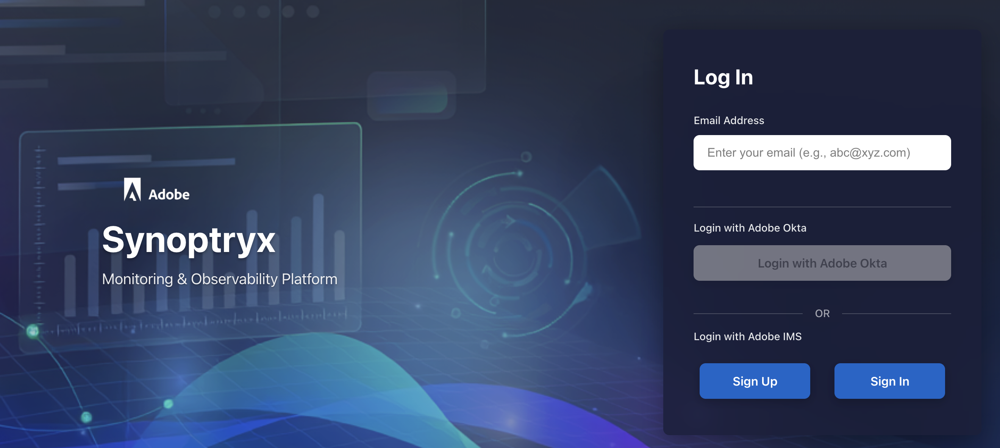

Monitor your AEM Managed Services environment with Synoptryx
Synoptryx provides visibility into application performance, infrastructure health, and service behavior in Adobe Experience Manager Managed Services, without requiring a separate monitoring platform.
If you are responsible for service reliability, incident response, or performance analysis, Synoptryx helps you move from symptoms to evidence quickly. It combines application telemetry and host-level health signals so customer teams and Adobe Managed Services can investigate issues from a shared operational view.
A Synoptryx Product Overview Whitepaper is available for the full AEM Managed Services observability and monitoring overview, ideal for sharing with stakeholders or reviewing offline.
Why teams use Synoptryx
Use Synoptryx to answer operational questions such as:
- Is the issue affecting Author, Publish, or both?
- Is the problem caused by application behavior, host resource pressure, or a combination of both?
- Which transactions, endpoints, or status groups explain the spike in errors or latency?
- Is the issue isolated to one environment or visible across the broader topology?
Synoptryx is designed for operational analysis of recent behavior. It helps you identify what changed, where it changed, and which signals are most relevant before escalation or corrective action.
What Synoptryx helps you do
- Understand how Author and Publish tiers behave under real traffic.
- Correlate application latency, error rates, and JVM health with host-level signals.
- Confirm whether an issue is isolated to one environment, one tier, or one host.
- Give Adobe Managed Services and your internal teams a shared operational view during investigation.
Synoptryx is included with AEM Managed Services. Adobe provisions and manages the account, instruments supported environments, and exposes the resulting dashboards as read-only operational tooling.
Because Adobe manages the platform setup and instrumentation, you can focus on investigation and interpretation rather than agent deployment, account administration, or dashboard assembly.
This guide is organized to help readers reach the right level of detail quickly. New users can start with onboarding, operators can go directly to task-oriented monitoring guides, and deep-dive investigations can use the dashboard reference for specific metrics and panels.
Who this documentation is for
- AEM Managed Services administrators who need visibility into monitored environments
- Operations and support teams handling incidents, trend analysis, and service review
- Customer engineering teams partnering with Adobe Managed Services during investigations
- Stakeholders who need to understand monitoring scope and operational responsibilities
At a glance
- Dedicated Synoptryx account — Provisioned and overseen by Adobe Managed Services, with read-only access for your team.
- Deep AEM transaction monitoring — The Synoptryx APM agent traces meaningful transactions down to method calls, external dependencies, and repository operations.
- Unified application and infrastructure view — Combine APM and host-level metrics to optimize performance holistically.
What Adobe monitors with Synoptryx
Adobe monitors AEM Author and Publish tiers with the Synoptryx APM Java plug-in. All hosted servers in your topology are monitored with the Synoptryx Infrastructure agent. Custom APM and Infrastructure monitoring is enabled in both non-production and production Managed Services environments.

Applications in your account
- One APM application for the Author tier per AEM Managed Services environment
- One APM application for the Publish tier per AEM Managed Services environment
Each application has its own license key. All topologies in your Managed Services contract report into one Synoptryx account. APM and Infrastructure metrics and events are retained for up to 30 days.
Core monitoring experiences
Application Performance Monitoring
Use APM when you need to understand request throughput, error rates, latency, JVM behavior, endpoint hotspots, and trace-level execution details for AEM applications.
Infrastructure monitoring
Use infrastructure dashboards when you need to determine whether the underlying hosts show CPU, memory, network, disk, or storage signals that explain the application behavior.
Reference and troubleshooting
Use the reference material when you need exact panel definitions, metric names, units, and screenshots. Use troubleshooting content for common entry points and support-oriented workflows.
Issue routing
Use the task-oriented investigation pages when you want a clearer path through triage instead of reading the full reference set.
Choose your path
- Get started with Synoptryx for first-time orientation
- Access and account management if you need Adobe IMS access or want to understand user roles
- Application Performance Monitoring to learn how to work with Author and Publish application dashboards
- Infrastructure monitoring to interpret host-level health and capacity signals
- APM dashboard reference and Infrastructure dashboard reference for panel-level metric details
Recommended starting points
I am new to Synoptryx
- Read Get started with Synoptryx.
- Review Access and account management.
- Review Coverage, environments, and data retention.
I am investigating a current issue
- Start with Application Performance Monitoring if the symptom is application-facing.
- Use Infrastructure monitoring if you suspect host-level pressure or need to confirm capacity impact.
- Use Investigate application issues or Investigate infrastructure issues for step-by-step investigation flows.
I need detailed metric interpretation
Go directly to APM dashboard reference, Infrastructure dashboard reference, and Metrics, coverage, and retention.
Access and your account
Monitoring data is consolidated in a Synoptryx account that Adobe provisions and manages. Customer users receive read-only access to APM and Infrastructure data collected by the agents. Adobe Managed Services retains account ownership and administrative control.
Access to Synoptryx requires Adobe IMS provisioning. Your Customer Success Engineer (CSE) can provision and manage user access for your organization. After provisioning, sign in at synoptryx.adobecqms.net.
How this guide is structured
- Overview and get started for orientation, access, and monitoring scope
- Use Synoptryx for product-area guidance and investigation workflows
- Reference for detailed panel-by-panel documentation
- Troubleshooting and FAQ for quick answers and future runbook expansion
What's next
- Get started with Synoptryx — Understand audience, workflows, and how the documentation is organized.
- Application performance monitoring (APM) — Trace AEM transactions, analyze JVM behavior, and inspect external services.
- Infrastructure monitoring — Review host-level system, network, process, and storage metrics.
- Troubleshooting and FAQ — Start from common questions and support-oriented paths when you are unsure where to begin.